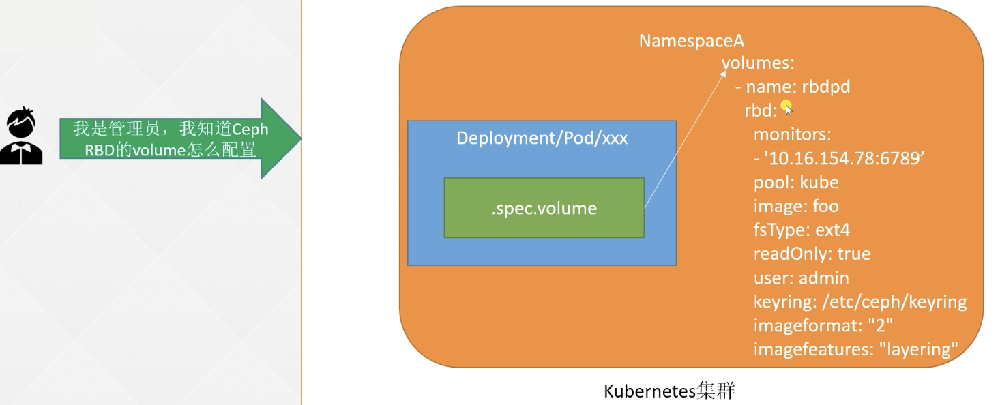
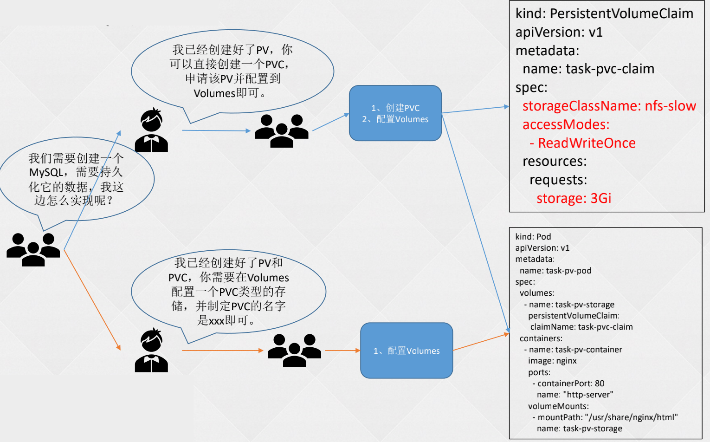

k8s 进阶篇-持久化存储
- TAGS: Kubernetes
k8s基础篇-持久化存储
Volumes
介绍
官方：
http://docs.kubernetes.org.cn/429.html
https://kubernetes.io/zh/docs/concepts/storage/volumes/
默认情况下容器中的磁盘文件是非持久化的，对于运行在容器中的应用来说面临两个问题，第一：当容器挂掉 kubelet 将重启启动它时，文件将会丢失；第二：当 Pod 中同时运行多个容器，容器之间需要共享文件时。Kubernetes 的 Volume 解决了这两个问题。
一些需要持久化数据的程序才会用到 Volumes，或者一些需要共享数据的容器需要 Volumes。
如
- redis-cluster 的 node.conf 的 ip 会变的，不能用 configmap，需要用 volumes 存储。
- 日志收集的需要：需要的应用程序的容器里加一个 sidecar，这个容器是一个收集日志的容器，如 filebeat，它通过 volumes 共享应用程序的日志文件目录。
背景
在Docker中也有一个 docker Volume 的概念 ，Docker的Volume只是磁盘中的一个目录，生命周期不受管理。当然Docker现在也提供Volume将数据持久化存储，但支持功能比较少（例如，对于Docker 1.7，每个容器只允许挂载一个Volume，并且不能将参数传递给Volume）。
另一方面，Kubernetes Volume具有明确的生命周期 - 与pod相同。因此，Volume的生命周期比Pod中运行的任何容器要持久，在容器重新启动时能可以保留数据，当然，当Pod被删除不存在时，Volume也将消失。注意，Kubernetes支持许多类型的Volume，Pod可以同时使用任意类型/数量的Volume。
内部实现中，一个Volume只是一个目录，目录中可能有一些数据，pod的容器可以访问这些数据。至于这个目录是如何产生的、支持它的介质、其中的数据内容是什么，这些都由使用的特定Volume类型来决定。
要使用Volume，pod需要指定Volume的类型和内容（`spec.volumes`字段），和映射到容器的位置（`spec.containers.volumeMounts`字段）。
卷的类型
Kubernetes支持Volume类型有：
- configMap
- secret
- emptyDir
- hostPath
- nfs
- persistentVolumeClaim
- local
- projected
- csi
- iscsi
- rbd
- cephfs
- fc (fibre channel)
- downwardAPI
emptyDir
使用emptyDir，当Pod分配到 Node 上时，将会创建emptyDir，并且只要Node上的Pod一直运行，Volume就会一直存。当Pod（不管任何原因）从Node上被删除时，emptyDir也同时会删除，存储的数据也将永久删除。注：删除容器不影响emptyDir。
默认情况下，emptyDir卷支持节点上的任何介质，可能是SSD、磁盘或网络存储，具体取决于自身的环境。可以将emptyDir.medium字段设置为Memory，让Kubernetes使用tmpfs（内存支持的文件系统），虽然tmpfs非常快，但是tmpfs在节点重启时，数据同样会被清除，并且设置的大小会被计入到Container的内存限制当中。
示例，直接指定 emptyDir 为`{}`即可：
apiVersion: apps/v1
kind: Deployment
metadata:
labels:
app: nginx
name: nginx
spec:
replicas: 2
selector:
matchLabels:
app: nginx
template:
metadata:
labels:
app: nginx
spec:
containers:
- image: nginx:1.15.12
name: nginx
volumeMounts:
- mountPath: /opt
name: share-volume
- image: busybox
name: busybox
command: ["/bin/sh", "-c", "sleep 3600"]
volumeMounts:
- mountPath: /mnt
name: share-volume
volumes:
- name: share-volume
emptyDir: {}
#medium: Memory
启动pod，并查看状态
kubectl apply -f pod_emptydir.yaml kubectl get pod -owide
emptyDir验证
[jasper.xu@ip-10-204-9-241 j]$ kubectl exec -it nginx-785b5bf7-65r4w -c nginx -- bash root@nginx-785b5bf7-65r4w:/# df -hT Filesystem Type Size Used Avail Use% Mounted on /dev/nvme0n1p1 xfs 100G 29G 72G 29% /opt root@nginx-785b5bf7-65r4w:/# touch /opt/123 root@nginx-785b5bf7-65r4w:/# exit exit [jasper.xu@ip-10-204-9-241 j]$ kubectl exec -it nginx-785b5bf7-65r4w -c busybox -- sh / # df -hT Filesystem Type Size Used Available Use% Mounted on /dev/nvme0n1p1 xfs 100.0G 28.6G 71.4G 29% /mnt / # ls /mnt/ 123
hostPath 挂载宿主机路径
hostPath允许挂载Node上的文件系统到Pod里面去。如果Pod需要使用Node上的文件，可以使用hostPath。
警告：
- hostPath 卷存在许多安全风险，最佳做法是尽可能避免使用 HostPath。 当必须使用 hostPath 卷时，它的范围应仅限于所需的文件或目录，并以只读方式挂载。
- 如果通过 AdmissionPolicy 限制 hostPath 对特定目录的访问，则必须要求 volumeMounts 使用 readOnly 挂载以使策略生效。
示例
hostPath 的一些用法有
- 运行一个需要访问 Docker 引擎内部机制的容器；请使用 hostPath 挂载 /var/lib/docker 路径。
- 在容器中运行 cAdvisor 时，以 hostPath 方式挂载 /sys。
- 允许 Pod 指定给定的 hostPath 在运行 Pod 之前是否应该存在，是否应该创建以及应该以什么方式存在。
支持类型
除了必需的 path 属性之外，用户可以选择性地为 hostPath 卷指定 type。支持的 type 值如下：
- 空字符串（默认）用于向后兼容，这意味着在安装 hostPath 卷之前不会执行任何检查。
- DirectoryOrCreate 如果在给定路径上什么都不存在，那么将根据需要创建空目录，权限设置为 0755，具有与 kubelet 相同的组和属主信息。
- Directory 在给定路径上必须存在的目录。
- FileOrCreate 如果在给定路径上什么都不存在，那么将在那里根据需要创建空文件，权限设置为 0644，具有与 kubelet 相同的组和所有权。【前提：文件所在目录必须存在；目录不存在则不能创建文件】
- File 在给定路径上必须存在的文件。
- Socket 在给定路径上必须存在的 UNIX 套接字。
- CharDevice 在给定路径上必须存在的字符设备。
- BlockDevice 在给定路径上必须存在的块设备。
范例： 挂载印度时区
apiVersion: apps/v1
kind: Deployment
metadata:
labels:
app: nginx
name: nginx
spec:
replicas: 2
selector:
matchLabels:
app: nginx
template:
metadata:
labels:
app: nginx
spec:
containers:
- image: nginx:1.15.12
name: nginx
volumeMounts:
- mountPath: /etc/localtime
name: time
volumes:
- hostPath:
path: /usr/share/zoneinfo/Asia/Calcutta
type: ""
name: time
挂载 NFS 至容器
安装 nfs 服务
NFS 是Network File System的缩写，即网络文件系统。Kubernetes中通过简单地配置就可以挂载NFS到Pod中，而NFS中的数据是可以永久保存的，同时NFS支持同时写操作。Pod被删除时，Volume被卸载，内容被保留。这就意味着NFS能够允许我们提前对数据进行处理，而且这些数据可以在Pod之间相互传递。
所有节点
yum install nfs-utils -y
安装nfs服务, node01
systemctl start nfs sudo systemctl enable nfs mkdir -p /data/nfs vim /etc/exports /data/nfs 10.4.0.0/24(rw,sync,no_subtree_check,no_root_squash) exportfs -r systemctl reload nfs-server
master01
mount -t nfs 192.168.0.204:/data/nfs /mnt/
cd /mnt/
touch 123
unmount /mnt
volume nfs
范例：volume nfs
apiVersion: apps/v1
kind: Deployment
metadata:
labels:
app: nginx
name: nginx
spec:
replicas: 2
selector:
matchLabels:
app: nginx
template:
metadata:
labels:
app: nginx
spec:
containers:
- image: nginx:1.15.12
name: nginx
volumeMounts:
- mountPath: /opt
name: nfs-volume
volumes:
- nfs:
server: 192.168.0.204
path: /data/nfs/test-dp
name: nfs-volume
volumes挂载
案例https://www.cnblogs.com/xiajq/p/11395211.html
生产环境不用nfs，也不直接用NFS，用PV来连接。可以用云服务商的来存储
PV&PVC
为什么要引入 PV 和 PVC
只有 Volume 无法满足生产需求

- 当某个数据卷不再被挂载使用时，里面的数据如何处理？
- 如果想要实现只读挂载如何处理？
- 如果想要只能一个Pod挂载如何处理？
- 如何只允许某个Pod使用10G的空间？
PersistentVolume：简称PV，是由Kubernetes管理员设置的存储，可以配置Ceph、NFS、GlusterFS等常用存储配置，相对于Volume配置，提供了更多的功能，比如生命周期的管理、大小的限制。PV分为静态和动态（StorageClass）。
PersistentVolumeClaim：简称PVC，是对存储PV的请求，表示需要什么类型的PV，需要存储的技术人员只需要配置PVC即可使用存储，或者Volume配置PVC的名称即可。
官方文档：https://kubernetes.io/docs/concepts/storage/persistent-volumes/
PV、PVC图解

一些概念：
- PV： 没有名称空间限制，PV分为静态（手动创建）和动态（StorageClass）
- PVC：绑定名称空间，pod 指定 pvc 的名称进行挂载
spec:
template:
spec:
containers:
- name: task-center-job
volumeMounts:
- name: logs
mountPath: /opt/task-center-job/logs
subPath: taskcenter/job
volumes:
- name: logs
persistentVolumeClaim:
claimName: efs-taskcenter-logs-claim
PV
PV 访问和回收策略
PV 回收策略：
- Retain：保留，该策略允许手动回收资源，当删除PVC时，PV仍然存在，PV被视为已释放，管理员可以手动回收卷。
- Recycle：（已被废弃）回收，如果Volume插件支持，Recycle策略会对卷执行 `rm -rf` 清理该PV，并使其可用于下一个新的PVC，但是本策略已弃用，旧的版本只有NFS和HostPath支持该策略。
- Delete：删除，如果Volume插件支持，删除PVC时会同时删除PV，动态卷默认为Delete，目前支持Delete的存储后端包括AWS EBS, GCE PD, Azure Disk, or OpenStack Cinder等。
- 可以通过persistentVolumeReclaimPolicy: Recycle字段配置
PV 回收策略文档：https://kubernetes.io/zh-cn/docs/concepts/storage/persistent-volumes/#reclaim-policy
PV 访问策略：
- ReadWriteOnce：可以被单节点以读写模式挂载，命令行中可以被缩写为RWO。
- ReadOnlyMany：可以被多个节点以只读模式挂载，命令行中可以被缩写为ROX。
- ReadWriteMany：可以被多个节点以读写模式挂载，命令行中可以被缩写为RWX。
- ReadWriteOncePod ：只允许被单个Pod访问，需要K8s 1.22+以上版本，并且是 CSI 创建的PV才可使用
PV 访问策略官方文档：https://kubernetes.io/docs/concepts/storage/persistent-volumes/#access-modes
文件存储、块存储、对象存储区别
存储的分类：
- 文件存储：一些数据可能需要被多个节点使用，比如用户的头像、用户上传的文件等，实现方式：NFS、NAS、FTP、CephFS等。
- 块存储：一些数据只能被一个节点使用，或者是需要将一块裸盘整个挂载使用，比如数据库、Redis等，实现方式：Ceph、GlusterFS、公有云。
- 对象存储：由程序代码直接实现的一种存储方式，云原生应用无状态化常用的实现方式，实现方式：一般是符合 S3 协议的云存储，比如AWS的S3存储、Minio、七牛云等。
创建 NAS 或 NFS 类型的 PV
NFS
apiVersion: v1
kind: PersistentVolume
metadata:
name: pv-nfs
labels:
type: business-a
spec:
capacity:
storage: 5Gi
volumeMode: Filesystem
accessModes:
- ReadWriteOnce
persistentVolumeReclaimPolicy: Recycle
storageClassName: nfs-slow # 这个名字是PVC创建的时候要对应的名字
mountOptions:
- hard
- nfsvers=4.1
nfs:
path: /tmp
server: 10.103.236.205
参数说明：
- capacity：容量配置
- volumeMode：卷的模式，目前支持Filesystem（文件系统） 和 Block（块），其中Block类型需要后端存储支持，默认为文件系统
- accessModes：该PV的访问模式
- storageClassName：PV的类，一个特定类型的PV只能绑定到特定类别的PVC； storageClassName 值与 PVC 设置相同的 PV 卷 才行，PVC 申领不必一定要请求某个类。如果 PVC 的 storageClassName 属性值设置为 ""， 则被视为要请求的是没有设置存储类的 PV 卷.
- persistentVolumeReclaimPolicy：回收策略
- mountOptions：非必须，新版本中已弃用
- nfs：NFS服务配置，包括以下两个选项
- path：NFS上的共享目录
- server：NFS的IP地址
PV 状态
- Available：可用，没有被PVC绑定的空闲资源。
- Bound：已绑定，已经被PVC绑定。
- Released：已释放，PVC被删除，但是资源还未被重新使用。
- Failed：失败，自动回收失败。
创建 hostPath 类型的 PV
kind: PersistentVolume
apiVersion: v1
metadata:
name: task-pv-volume
labels:
type: local
spec:
storageClassName: hostpath
capacity:
storage: 10Gi
accessModes: - ReadWriteOnce
hostPath:
path: "/mnt/data"
说明：
- hostPath：hostPath服务配置
- path：宿主机路径
一般 pod 是不推荐固定到某 1 个节点的。
PVC
PVC 如何绑定到 PV

- PVC 的 StorageClassName 没有和 PV 的一致
- PVC 的 accessModes 和 PV 的一致
- 设置置标签选择算符来进一步过滤卷集合
- matchLabels
- matchExpressions
- PV 设置 claimRef 指定某个 PVC
cat <<\EOF | kubectl apply -f -
apiVersion: v1
kind: PersistentVolume
metadata:
name: dbench-pv-0
spec:
accessModes:
- ReadWriteOnce
capacity:
storage: 500Gi
claimRef:
apiVersion: v1
kind: PersistentVolumeClaim
name: dbench-pv-claim
namespace: gitlab-test-xcw
mountOptions:
- hard
- nfsvers=3
- nolock
nfs:
path: /nvxa7jnu/tmp-test/gitaly
server: 10.22.0.29
persistentVolumeReclaimPolicy: Retain
volumeMode: Filesystem
EOF
#nfs-pvc
cat <<\EOF |kubectl apply -f -
apiVersion: v1
kind: PersistentVolumeClaim
metadata:
name: dbench-pv-claim
namespace: gitlab-test-xcw
spec:
accessModes:
- ReadWriteMany
resources:
requests:
storage: 500Gi
volumeMode: Filesystem
volumeName: dbench-pv-0
EOF
PVC 挂载示例
- deployment pvc
创建 PVC
apiVersion: v1 kind: PersistentVolumeClaim metadata: name: nfs-pvc-claim # PVC的名字，可自取 spec: accessModes: - ReadWriteMany # 访问策略和 pv 一致 volumeMode: Filesystem resources: requests: storage: 2Gi # 一定要小于等于 pv storageClassName: nfs-slow # 挂载哪种类型的 pv# create PVC kubectl create -f test-pvc.yaml # 查看PVC [root@k8s-master01 app]# kubectl get pvc NAME STATUS VOLUME CAPACITY ACCESS MODES STORAGECLASS AGE myclaim Bound pv0001 5Gi RWX nfs-slow 34s # 再次查看PV，可看到状态已经发生改变 [root@k8s-master01 app]# kubectl get pv NAME CAPACITY ACCESS MODES RECLAIM POLICY STATUS CLAIM STORAGECLASS REASON AGE pv0001 5Gi RWX Recycle Bound default/myclaim nfs-slow 13m
deployment pod 配置 Volumes 使用类型 persistentVolumeClaim
cat nginx.yaml apiVersion: apps/v1 kind: Deployment metadata: labels: app: nginx name: nginx spec: replicas: 2 selector: matchLabels: app: nginx template: metadata: labels: app: nginx spec: containers: - image: nginx:1.15.12 name: nginx volumeMounts: - mountPath: /usr/share/nginx/html name: task-pv-container volumes: - PersistentVolumeClaim: claimNmae: nfs-pvc-claim name: task-pv-storage# 更改后的yaml，在对应位置加上以下参数调用PVC volumeMounts: - mountPath: /opt/pvc name: mypd volumes: - name: mypd persistentVolumeClaim: claimName: myclaim # 然后进入容器查看是否挂载成功 [root@k8s-master01 app]# kubectl exec -it nginx-5bb6d88dfb-w78k8 -c nginx2 -- bash root@nginx-5bb6d88dfb-w78k8:/# df -h Filesystem Size Used Avail Use% Mounted on overlay 37G 4.3G 33G 12% / tmpfs 64M 0 64M 0% /dev tmpfs 985M 0 985M 0% /sys/fs/cgroup /dev/mapper/centos-root 37G 4.3G 33G 12% /mnt 192.168.1.104:/data/nfs 37G 3.0G 35G 9% /opt/pvc # 这就是刚刚挂载的PVC # 文件能共享 root@nginx-5bb6d88dfb-w78k8:/opt/pvc# ls pvc qqq test root@nginx-5bb6d88dfb-w78k8:/opt/pvc# echo 11 > test root@nginx-5bb6d88dfb-w78k8:/opt/pvc# cat test 11
- statfulset pvc
cat > nginx-sts.yaml << EFO apiVersion: v1 kind: Service metadata: name: nginx labels: app: nginx spec: ports: - port: 80 name: web clusterIP: None selector: app: nginx --- apiVersion: apps/v1 kind: StatefulSet metadata: name: web spec: #updateStrategy: # rollingUpdate: # partition: 0 # type: RollingUpdate selector: matchLabels: app: nginx # 必须匹配 .spec.template.metadata.labels serviceName: "nginx" replicas: 3 # 默认值是 1 # minReadySeconds: 10 # 默认值是 0 ，v1.22 版本才有 template: metadata: labels: app: nginx # 必须匹配 .spec.selector.matchLabels spec: terminationGracePeriodSeconds: 10 containers: - name: nginx image: registry.k8s.io/nginx-slim:0.8 ports: - containerPort: 80 name: web volumeMounts: - name: www mountPath: /usr/share/nginx/html volumeClaimTemplates: - metadata: name: www spec: accessModes: [ "ReadWriteOnce" ] storageClassName: "nfs-slow" resources: requests: storage: 1Gi EFO根据 pvc 模板自动创建 pvc
需要提前准备好与 pvc 相同的类（storageClassName）的 pv。
PVC 创建和挂载处理 Pending 的原因
创建 PVC 之后，一直绑定不上 PV（Pending）：
- PVC 的空间申请大小大于 PV 的大小
- PVC 的 StorageClassName 没有和 PV 的一致
- PVC 的 accessModes 和 PV 的不一致
创建挂载了 PVC 的 Pod 之后，一直处于 Pending 状态：
- PVC 没有被创建成功，或者被创建
- PVC 和 Pod 不在同一个 Namespace
删除PVC后, k8s会创建一个用于回收的Pod, 根据PV的回收策略进行pv的回收, 回收完以后PV的状态就会变成可被绑定的状态也就是空闲状态, 其他的Pending状态的PVC如果匹配到了这个PV，他就能和这个PV进行绑定。
PV文档：https://kubernetes.io/docs/concepts/storage/persistent-volumes/
https://kubernetes.io/zh/docs/concepts/storage/persistent-volumes/
改变默认存储类
所有未设置 storageClassName 的 PVC 都只能绑定到隶属于默认存储类的 PV 卷。
设置默认 StorageClass 的工作是通过将对应 StorageClass 对象的注解 storageclass.kubernetes.io/is-default-class 赋值为 true 来完成的。
官方参考：https://kubernetes.io/zh-cn/docs/tasks/administer-cluster/change-default-storage-class/